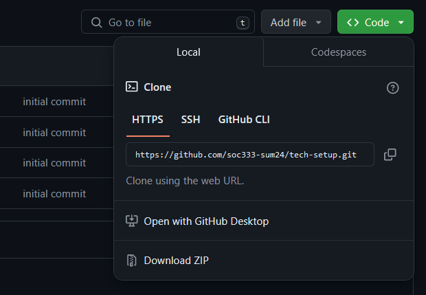
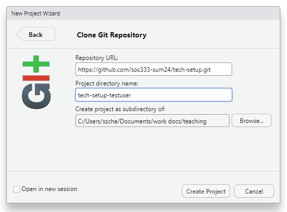
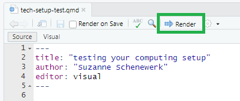
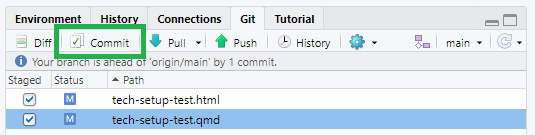
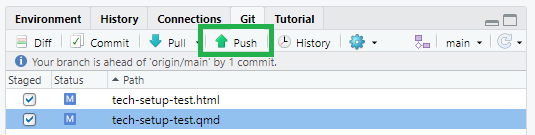

How to access and submit your assignments: cloning, committing, and pushing
How to clone a git repo
You will begin most assignments and exercises in this class by “cloning” a git repository containing template documents hosted in our course organization on GitHub. “Cloning” simply means creating your own local copy of the files the repository contains. It is equivalent to downloading project instructions from Sakai. The main difference is that on GitHub, the files on the internet and the copies on your computer stay linked. This makes it easy to incorporate your changes into the online version and vice versa.
Step 1: Get the repo link from GitHub
Go to the course organization (https://github.com/soc333-sum23). Click on the repo you want to work on.
- Important
For each assignment, you will see a template repo and your individual repo. Your individual repo will have your name appended on the end. You should clone your individual repo. You will not be able to push changes to template repos.
Click on the green CODE button. Select HTTPS (this might already be selected by default). Click on the clipboard icon to copy the repo URL.

Step 2: Use RStudio to copy the contents to your computer
In RStudio, go to File ➛ New Project ➛Version Control ➛ Git.
Paste the URL you copied in Step 1 into the box Repository URL. Again, please make sure to have HTTPS highlighted under Clone when you copy the address.
Change the default directory to something you’ll be able to find later on your computer—I recommend making a folder just for this class, and keeping all of your repos in it!

Click Create Project, and the files from your GitHub repo will be displayed in the Files pane in RStudio.

Open the template files (typically .qmd files) and make and save your changes.
Read on to learn how to use commits and pushes to submit your work.
How to commit and push changes
“Committing” changes means saving them to Git. You should commit your changes frequently—as a rule of thumb, every time you finish a task, or reach some other natural stop point that you may want to roll back to later on.
“Pushing” your commits to GitHub means updating the internet versions of the files with the changes you’ve made. You will submit your work by pushing your changes to your assignment repository on GitHub.
Step 1: Save and render
First, save your file as you normally would (File -> Save). This saves your changes to your computer and makes them available to commit.
Most files will be set to automatically render (run everything and create a nice pretty html version) when you save them. You can also render them manually by clicking the Render button in the menu bar.

Step 2: Stage and commit changes
In the upper right hand corner of RStudio, you should see a pane with several tabs. One of those tabs is labeled “Git.” Click this, and you should see a list of some or all the files in your project directory.

To commit changes, first you have to stage them. Changes to multiple files can be included in one commit. Check the boxes next to your .html and .qmd files—this tells Git that you want to include all changes you’ve made to the qmd file and add in the new html file.
Then, click the “Commit” button. This brings up a window in which you can see the changes you’ve made. Enter a short label or message describing your commit in the text box in the upper right hand corner, then click “Commit” again to finish the commit. Once everything is finished, you can close the popup window.

Step 3. Push your changes to GitHub
Now you’ve successfully logged your changes with Git. But Git is just a program that lives on your computer. In order for your changes to show up on GitHub, where I can see and grade them, you need to “push” your local commits back up to the remote repository. Essentially, you’re uploading your changes to the online version of the project.
In the menu bar of the Git pane, you should see a green up arrow. This is the push button, and when you click it, all of the commits you have made will be uploaded to your repository on GitHub.
Click the green arrow to push your commit.

Did it work? Check GitHub!
If all worked as it should have, you should be able to see the commit you made on GitHub.
Find the repository you’re working on in our course github organization. You should see the list of files in the repository, and your commit message should show up at the top and next to the the files you edited. If you click on these files, you should see the changes you made.